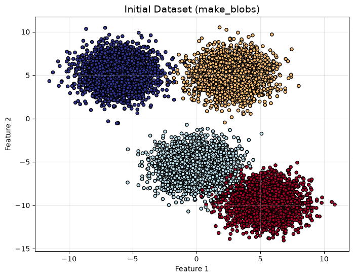
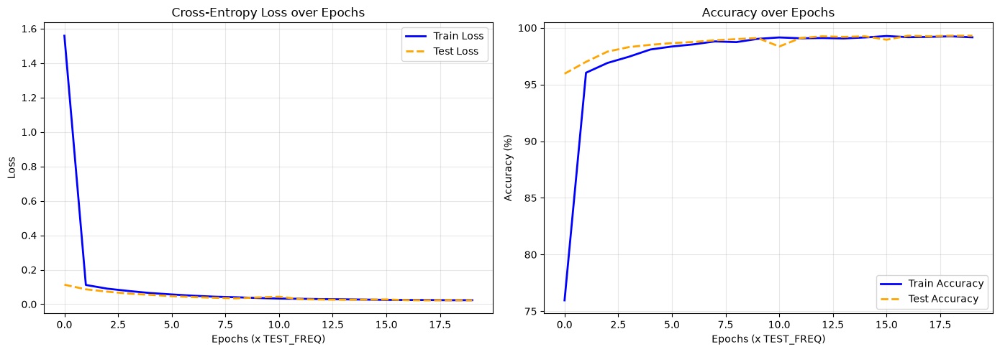
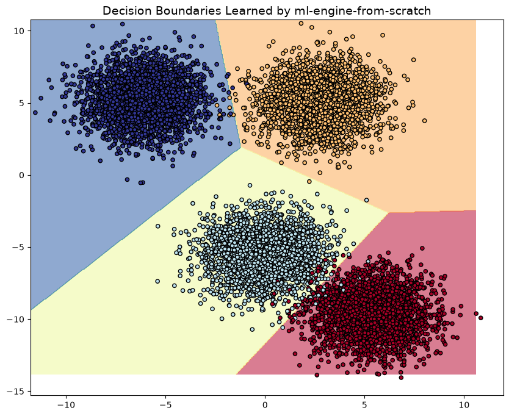

import ml_framework as ml
from matplotlib import pyplot as plt
from sklearn.datasets import make_blobs
from sklearn.model_selection import train_test_split
import numpy as np
# General configuration
N_SAMPLES = 10000
N_IN_FEATURES = 2
K = 4 # Number of classes (clusters)
RANDOM_SEED = 10
TEST_SIZE = 0.2
rng = np.random.default_rng(RANDOM_SEED)Multiclass Classification with ml-engine-from-scratch
This notebook demonstrates the use of our from-scratch Deep Learning framework to solve a non-linear multiclass classification problem.
We will generate a complex synthetic dataset (4 clusters), configure a neural network with our custom Adam optimizer, and visualize the decision boundaries learned by the model.
1. Data Generation and Preparation
We use scikit-learn’s make_blobs to generate 10,000 points distributed across 4 distinct clusters.
Before passing the data to our neural network, we will plot the raw dataset to understand its geometry. Finally, since our framework uses CrossEntropyLoss, we will transform our integer labels (0, 1, 2, 3) into One-Hot Encoded vectors (e.g., [0, 1, 0, 0]).
def to_one_hot(y: np.ndarray, K: int) -> np.ndarray:
y_out = np.zeros((len(y), K))
y_out[np.arange(y.shape[0]), y] = 1
return y_out
# Data generation
x_data, y_data = make_blobs(n_samples=N_SAMPLES, n_features=N_IN_FEATURES, centers=K, random_state=RANDOM_SEED, cluster_std=1.5)
# Initial Visualization of the Raw Data
plt.figure(figsize=(8, 6))
plt.title("Initial Dataset (make_blobs)", fontsize=14)
plt.scatter(x_data[:, 0], x_data[:, 1], c=y_data, s=20, cmap=plt.cm.RdYlBu, edgecolors='k')
plt.xlabel("Feature 1")
plt.ylabel("Feature 2")
plt.grid(alpha=0.3)
plt.show()
# Train / Test split
X_train, X_test, y_train, y_test = train_test_split(x_data, y_data, test_size=TEST_SIZE, random_state=RANDOM_SEED)
# One-Hot encoding for labels
y_train_one_hot = to_one_hot(y_train, K)
y_test_onehot = to_one_hot(y_test, K)
print(f"Training data shape: {X_train.shape}")
print(f"Training labels shape (One-Hot): {y_train_one_hot.shape}")
Training data shape: (8000, 2)
Training labels shape (One-Hot): (8000, 4)2. Neural Network Architecture
We build a Multi-Layer Perceptron (MLP) with one hidden layers.
*Engineering Note: For simple datasets like make_blobs, non-linear activations aren’t strictly necessary since the data is mostly linearly separable (stacking linear layers simply mathematically collapses into a single linear transformation).
hidden_layer_size = 32
LEARNING_RATE = 0.001
# Model creation using our Sequential API
model = ml.Sequential([
ml.LinearLayer(in_features=N_IN_FEATURES, out_features=hidden_layer_size),
ml.LinearLayer(in_features=hidden_layer_size, out_features=K) # Output layer
])
# Loss function and Optimizer
loss_fn = ml.CrossEntropyLoss()
optimizer = ml.Adam(learning_rate=LEARNING_RATE)3. Model Training
We train the network for 20 epochs using mini-batches. We record the loss and accuracy history throughout the process to analyze the model’s convergence.
EPOCHS = 20
BATCH_SIZE = 32
TEST_FREQ = 1
train_loss_history, test_loss_history = [], []
train_accuracy_history, test_accuracy_history = [], []
for epoch in range(EPOCHS):
model.train()
# Shuffle training data
indices = np.arange(0, len(X_train))
rng.shuffle(indices)
avg_train_loss = 0
avg_train_accuracy = 0
# Mini-batch loop
for start_idx in np.arange(0, len(X_train), BATCH_SIZE):
end_idx = start_idx + BATCH_SIZE
X_batch = X_train[indices[start_idx:end_idx]]
y_batch = y_train_one_hot[indices[start_idx:end_idx]]
# Forward pass
batch_logits = model(X_batch)
# Loss and Accuracy calculation
avg_train_loss += loss_fn(logits=batch_logits, y_expected=y_batch) * len(y_batch)
avg_train_accuracy += np.sum(np.argmax(y_batch, axis=1) == np.argmax(batch_logits, axis=1))
# Backpropagation
model.backward(loss_fn.backward())
# Optimizer step
optimizer.step(model)
avg_train_accuracy /= len(y_train_one_hot) * 0.01
avg_train_loss /= len(y_train_one_hot)
# Evaluation on the test set
if epoch % TEST_FREQ == 0 or epoch == 0 or epoch == EPOCHS - 1:
model.eval()
test_logits = model(X_test)
test_pred = np.argmax(test_logits, axis=1)
test_loss = loss_fn(logits=test_logits, y_expected=y_test_onehot)
test_accuracy = np.sum(test_pred == y_test) / len(y_test) * 100
train_loss_history.append(avg_train_loss)
train_accuracy_history.append(avg_train_accuracy)
test_loss_history.append(test_loss)
test_accuracy_history.append(test_accuracy)
print(f"Epoch {epoch+1:02d} | Train Loss: {avg_train_loss:.4f} | Train Acc: {avg_train_accuracy:.2f}% | Test Loss: {test_loss:.4f} | Test Acc: {test_accuracy:.2f}%")Epoch 01 | Train Loss: 1.5588 | Train Acc: 75.96% | Test Loss: 0.1132 | Test Acc: 95.95%
Epoch 02 | Train Loss: 0.1117 | Train Acc: 96.04% | Test Loss: 0.0865 | Test Acc: 97.00%
Epoch 03 | Train Loss: 0.0903 | Train Acc: 96.90% | Test Loss: 0.0728 | Test Acc: 97.90%
Epoch 04 | Train Loss: 0.0767 | Train Acc: 97.45% | Test Loss: 0.0616 | Test Acc: 98.30%
Epoch 05 | Train Loss: 0.0649 | Train Acc: 98.09% | Test Loss: 0.0545 | Test Acc: 98.50%
Epoch 06 | Train Loss: 0.0566 | Train Acc: 98.35% | Test Loss: 0.0467 | Test Acc: 98.65%
Epoch 07 | Train Loss: 0.0492 | Train Acc: 98.54% | Test Loss: 0.0416 | Test Acc: 98.75%
Epoch 08 | Train Loss: 0.0436 | Train Acc: 98.80% | Test Loss: 0.0373 | Test Acc: 98.90%
Epoch 09 | Train Loss: 0.0403 | Train Acc: 98.74% | Test Loss: 0.0340 | Test Acc: 99.00%
Epoch 10 | Train Loss: 0.0360 | Train Acc: 99.03% | Test Loss: 0.0393 | Test Acc: 99.10%
Epoch 11 | Train Loss: 0.0328 | Train Acc: 99.15% | Test Loss: 0.0435 | Test Acc: 98.35%
Epoch 12 | Train Loss: 0.0313 | Train Acc: 99.08% | Test Loss: 0.0290 | Test Acc: 99.10%
Epoch 13 | Train Loss: 0.0295 | Train Acc: 99.10% | Test Loss: 0.0269 | Test Acc: 99.25%
Epoch 14 | Train Loss: 0.0283 | Train Acc: 99.06% | Test Loss: 0.0258 | Test Acc: 99.20%
Epoch 15 | Train Loss: 0.0267 | Train Acc: 99.15% | Test Loss: 0.0266 | Test Acc: 99.25%
Epoch 16 | Train Loss: 0.0252 | Train Acc: 99.28% | Test Loss: 0.0277 | Test Acc: 98.95%
Epoch 17 | Train Loss: 0.0245 | Train Acc: 99.17% | Test Loss: 0.0234 | Test Acc: 99.30%
Epoch 18 | Train Loss: 0.0243 | Train Acc: 99.20% | Test Loss: 0.0224 | Test Acc: 99.25%
Epoch 19 | Train Loss: 0.0232 | Train Acc: 99.25% | Test Loss: 0.0239 | Test Acc: 99.30%
Epoch 20 | Train Loss: 0.0236 | Train Acc: 99.16% | Test Loss: 0.0225 | Test Acc: 99.30%4. Learning Curves: Loss and Accuracy
Visualizing the training and testing metrics over the epochs helps us ensure the model is converging properly and verify that it isn’t overfitting to the training data.
# Create a figure with two side-by-side subplots
plt.figure(figsize=(14, 5))
# Plot 1: Loss over Epochs
plt.subplot(1, 2, 1)
plt.plot(train_loss_history, label='Train Loss', color='blue', linewidth=2)
plt.plot(test_loss_history, label='Test Loss', color='orange', linewidth=2, linestyle='--')
plt.title('Cross-Entropy Loss over Epochs', fontsize=12)
plt.xlabel('Epochs (x TEST_FREQ)', fontsize=10)
plt.ylabel('Loss', fontsize=10)
plt.legend()
plt.grid(alpha=0.3)
# Plot 2: Accuracy over Epochs
plt.subplot(1, 2, 2)
plt.plot(train_accuracy_history, label='Train Accuracy', color='blue', linewidth=2)
plt.plot(test_accuracy_history, label='Test Accuracy', color='orange', linewidth=2, linestyle='--')
plt.title('Accuracy over Epochs', fontsize=12)
plt.xlabel('Epochs (x TEST_FREQ)', fontsize=10)
plt.ylabel('Accuracy (%)', fontsize=10)
plt.legend()
plt.grid(alpha=0.3)
plt.tight_layout()
plt.show()
5. Decision Boundary Visualization
To verify that the network has successfully captured the geometry of the data, we will create a 2D mesh grid, ask the model to predict the class for each point, and plot the resulting decision boundaries.
# Create a mesh grid covering the data space
xx, yy = np.meshgrid(
np.linspace(np.min(x_data[:, 0]) - 0.25, np.max(x_data[:, 0]) - 0.25, 500),
np.linspace(np.min(x_data[:, 1]) + 0.25, np.max(x_data[:, 1]) + 0.25, 500)
)
# Predict across the entire grid
model.eval()
grid_points = np.c_[xx.ravel(), yy.ravel()]
grid_probs = model(grid_points)
grid_preds = np.argmax(grid_probs, axis=1)
# Plotting the boundaries and the original data
plt.figure(figsize=(10, 8))
plt.title("Decision Boundaries Learned by ml-engine-from-scratch", fontsize=14)
plt.contourf(xx, yy, grid_preds.reshape(xx.shape), cmap=plt.cm.Spectral, alpha=0.6)
plt.scatter(x=x_data[:, 0], y=x_data[:, 1], c=y_data, s=20, cmap=plt.cm.RdYlBu, edgecolors='k')
plt.show()
6. Conclusion and Engineering Insights
Our custom ml-engine-from-scratch framework successfully classified the dataset, achieving an impressive 99.30% test accuracy in just 20 epochs. The smooth convergence of both the training and testing loss curves demonstrates the stability and mathematical correctness of our custom Adam optimizer and CrossEntropyLoss implementations.
Architectural Insight: You will notice that we achieved this >99% accuracy using only stacked LinearLayers, completely omitting non-linear activation functions like ReLU. Because multiple linear transformations mathematically collapse into a single linear operation, our network effectively acted as a multi-class Softmax Regression model. This exceptional performance confirms that the make_blobs dataset is perfectly linearly separable.
For future experiments with complex, non-linearly separable data (such as the make_moons dataset), we can simply inject our ActivationLayer(ReLU) between the linear layers to instantly give the network the mathematical flexibility to bend its decision boundaries.